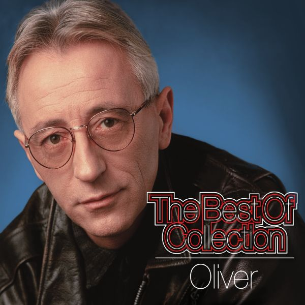
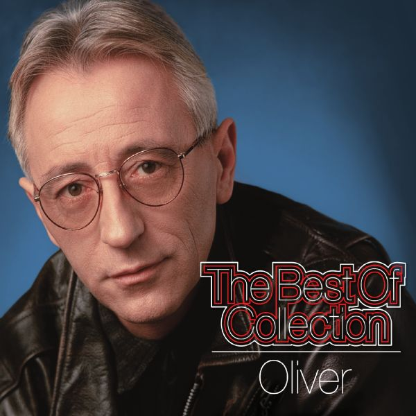

Pjevanje je naziv za poseban način uporabe ljudskoga glasa u glazbi: prilikom pjevanja, zvuk se proizvodi glasnicama. Gotovo svatko tko može govoriti može i pjevati, jer pjevanje je u mnogim aspektima samo jedan oblik kontinuirana govora. U pjevanju je vrlo važna tehnika disanja. Pjevači svoj glas i tijelo moraju vježbati skoro kao i sportaši jer glas, zapravo, proizvodi sićušan organ s mišićima. Vokalnu glazbu pjevači mogu izvoditi a capella (bez pratnje) ili uz pratnju glazbenika instrumentalista. Može se pjevati solo, u manjim vokalnim sastavima ili u pjevačkom zboru. Tehnika pjevanja uvelike ovisi o vrsti glazbe koju se izvodi. Pjevanje na visokim amaterskim ili profesionalnim razinama obično zahtijeva određenu količinu urođenoga talenta i stručnoga obrazovanja.[1] Najzahtjevnija je tehnika pjevanja opernih pjevača: njihovo umijeće zahtijeva dugogodišnje obrazovanje, a tehnika disanja im je slična tehnici disanja kod svirača puhačkih glazbala. Važan je stalni pritisak zraka pomoću dijafragme te jednoliko i snažno propuštanje zraka kroz glasnice. Pritom snaga pritiska zraka nije manja ako pjevač pjeva piano]a, tj. tiho, nego pritisak treba biti jednako moćan, a samo količina zraka treba biti manja, rjeđa. Pjevanje zabavne glazbe u pravilu ne zahtijeva neko posebno obrazovanje, već se njeguje karakter i izražajnost prirodnoga, odnosno govornoga glasa. No bez obzira na tehniku, za pjevače je vrlo važno da imaju dobar sluh. Stručno obrazovani pjevači obično izgrade karijeru u nekom specifičnom glazbenom žanru, a mnogi od njih tijekom karijere ili nakon nje postaju učitelji pjevanja.
 
